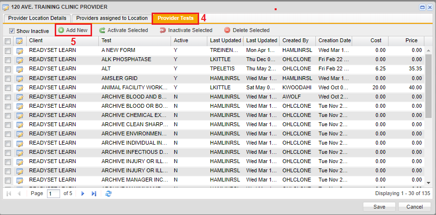

Adding the Charting Form to a Provider Location
To Add the Charting Form to a Provider Location
- On the horizontal navigation panel, click the Client Admin tab.
- On the left navigation panel, click Provider Locations.
- In the Search Results window, click an existing provider location.
The provider location window opens. - Click the Provider Tests tab.

- Click Add New to add a new charting form to a provider.
- Select the new form that was created, by clicking the checkbox in front of the form.
- Click Add Tests.
The form is displayed in the list of providers under the Provider Tests tab. - Click Save.